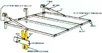

Here's an easy-to-build "rainy-day" home project that can save you both money and energy ... in fact, your family probably can't afford not to make one!
One of the worst energy gobblers in any home-aside from the dwelling's heating system and water heater-is the clothes dryer. Not only are such appliances power hungry, but they're also incredibly wasteful: All the nice warm, humid air they produce is usually blown outside!
In the summer, of course, it's easy to avoid the energy waste by relying on solar power to "fuel" that old standby: an outdoor clothesline, However, you may have wondered, what can a person do on those all-too-frequent rainy spring (or snowy winter) days when the weather refuses to cooperate?
The answer may be an indoor clothesdrying rack, similar to the one pictured here. My dad has been building the devices for our family's use since 1949 ... and Mom depended on the handy racks for 30 years without the backup aid of an electric dryer. The "granddaddy" of our present indoor clothes dryer was made of wood, but that early model eventually fell apart ... after almost 12 years of continuous use!
Dad was, I think, a tad disappointed that his original design didn't hold up better, so he came up with an allaluminum model that is sturdier, is relatively simple to build, hangs over the top of any door in the house, and stores easily. The homemade dryer is also a natural energy-saver, since it uses no fuel other than the warmth already circulating through the house (while allowing humidity to transfer from the wet clothes to the often dry indoor air). The sturdy frame can handle anything from diapers to blankets ... and it'll usually dry a full load of wash within 24 hours.
Basically, the portable clothes rack is nothing more than four parallel bars riveted to two end pieces to form a square frame ... plus three hanger units that secure the contraption to the top of a door. Clothespins are then attached-using nuts and bolts-at regular intervals along the crossbars. To make your own over-thedoor dryer, you'll need 22 feet of aluminum flat bar (the best size is 1/8" X 3/4"), 42 one-inch-long bolts and 84 nuts, 26 rivets, and 42 clothespins (I recommend wooden pins with large springs, because I've found that plastic fasteners-and those with small springs-just don't last as long as do the "old-fashioned" kind).
Before you can put your drying rack together, you'll have to divide the aluminum into several different lengths. First, cut four 33-1/2" pieces, and bend the metal-using a vise-to a 90° angle ... at points 2 inches from each end of every strap. These will become the crossbars, frome which you'll hang the wet clothes.
Next, cut two 29-1/2" lengths ( don't bend these sections) to serve as the ends of the frame. To fashion the hanger bars, cut three 12-1/4" pieces ... then-on one end of each of them-form a 90° angle at the 2-inch mark, and another at 3-1/2 inches. (If necessary, you can modify these measurements to make the rack fit the dimensions of the door you're planning to use.)
Finally, you'll need two short supports, which will attach the end hangers to the frame (as shown in the diagram). Bend each 17"-long piece, at a point 1 inch from one end, to an angle that will allow the support to be riveted flat against its hanger. In addition, use your vise to twist the metal, as illustrated, into a 90° "turn" ... so that it'll rest flat against the horizontal crossbar.
Drill holes for the clothespins at regular intervals along the four crossbars and the end bar which will not be attached to the hanger units. Make the first hole in each section four inches from the bend in the bar, to allow for clearance at the edge that'll be closest to the door ... then make eight more holes spaced 3 inches apart. Attach a clothespin at each opening-by running a bolt through its spring, as shown in the diagram-on the inside of the aluminum bar.
Next, drill the necessary holes and rivet the frame together as illustrated. The rivets which secure the hangers to the rack should be flush, to avoid scratching the door ... but you might want to go ahead and drape a towel over the top of the portal before the rack is hung up, just in case. (You can provide further protection by simply gluing strips of felt to the underside of each hanger unit.)
That's really all there is to it: You can make one of the racks in a couple of hours ... and use it for years! Although the dryer can serve as a household's only means of drying clothes, I like to combine the capabilities of my over-the-door helper with those of a modern electric dryer. First, I just tumble a load of wet clothes in the dryer-on low heat-for five to ten minutes ... then switch to air only for another ten minutes, in order to use up any heat that may be left in the clothes, before hanging the laundry. My system removes wrinkles (eliminating the need for ironing) and saves energy!
|
|
 |
|